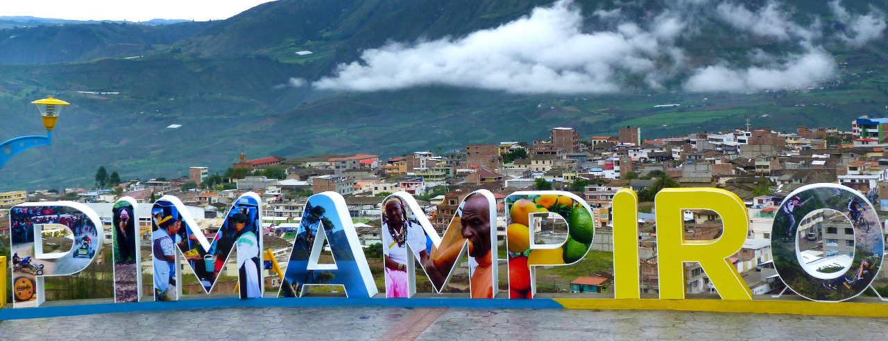

La tradición histórica más frecuentemente utilizada dice que los pobladores primitivos de Pimampiro provienen de los caribes y los arawacos, que originaron el surgimiento de dos pueblos: los Chapí y los Pimampiros. Pimampiro se compone de cinco voces: PI – MA – AM – PI – RAR cuya traducción es ‘vida’, ‘grande agua’, ‘mucho’, ‘borde’, lo que significaría ‘poblado que está asentado a las orillas de un río grande’. Algunos historiadores que han escrito la historia de Pimampiro indican que estuvo localizado a las orillas del río Pisque. A partir de la fundación de la ciudad de Ibarra, Pimampiro es considerada como parroquia civil. Al fundarse el cabildo, se nombra también a los alcaldes que ejercen autoridad civil en las parroquias. El 25 de junio de 1824 Pimampiro fue creada como parroquia civil mediante decreto establecido por la Gran Colombia.